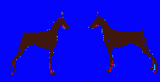
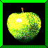
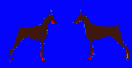
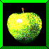

Media, 로스트 미디어, 유실매체
더 이상 존재하지 않거나 삭제된 비디오, 영화, 이미지 등의 미디어.
정보의 바다라고 불리는 인터넷이지만, 인터넷상의 정보는 생각보다 쉽게
사라져 버린다. 작성자가 게시글을 삭제하지 않는다고 하더라도, 웹사이트를
운영하는 회사의 사정으로 서비스가 중단되거나 개편되는 등의 원인으로
지금 이 순간에도 수많은 하이퍼링크가 끊어지고 있다.
미국 퓨 리서치 센터의 2023년 연구에 따르면, 2013년에는 접속 가능했던
웹페이지 중 38%가 10년 뒤인 2023년에는 접속할 수 없게 되었다.
또한, 영어 위키백과의 인용/출처 란에 달린 링크 중 절반 이상은 이미 접속
불가능 상태였다(링크 부패/Link Rot).
Internet: easy come, easy go
우리는 더 이상 인터넷을 ‘기억의 외주처’로만 둘 수 없다. 너무 쉽게 사라지기 때문이다. 우리가 살아가는 인터넷은 단순한 네트워크를 너머 시뮬레이션과 같이 작동한다. 그리고 그것이 사라지는 순간 우리의 현실도 함께 붕괴된다.
우리는 인터넷을 통해 현실을 저장하지만, 그것이 언제든 삭제될 수 있다.
우리가 살아가는 인터넷은 단순한 네트워크를 너머 시뮬레이션과 같이 작동한다.
그리고 그것이 사라지는 순간 우리의 현실도 함께 붕괴된다.
현대의 현실은 인터넷과 분리될 수 없다. 우리는 인터넷에 기억을 저장하고, 관계를 맺고,
정보를 소비하며 살아간다.
한번 웹에 무언가를 업로드하면 영원할 것 같다는, 우리의 통념과 달리 인터넷은 영원하지 않다.
현실보다도 단절되기 쉽고 언제든지 사라질 수 있다.
인터넷 은
언제든지 사라질 수 있다.
은
언제든지 사라질 수 있다.